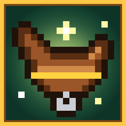

Mob Rider
A Minecraft add-on that lets you ride any mob. Zombies, creepers, dolphins, even ghasts!
⬇️ Download for Minecraft
For Minecraft Bedrock on iPad, iPhone, Android and Windows. Free, no ads.
How to put it on the iPad
- Tap Download for Minecraft above, then tap Download when Safari asks.
- Open the Files app, go to Downloads, and tap MobRider.mcaddon. Minecraft opens and says Successfully imported.
If tapping the file doesn't open Minecraft, tap the Share button and choose Minecraft.
- In Minecraft, tap Create New World (or the pencil next to an old world). Scroll to Behavior Packs, tap Available, tap Mob Rider, then Activate. It works alongside Bender Forge too.
- Tap Create or Play. You get a free Magic Saddle the first time you join.
How to ride
- Hold the Magic Saddle.
- Walk up close to any mob and look right at it.
- Tap the Ride! button. You hop on!
- Steer with the joystick. Tap Sneak (or the get-off button) to hop off.
Three ways to ride
🏃
Walkers
Run around and hold Jump for a big leap. They climb one-block steps by themselves.
🧟🐄🕷️💥
Flyers
Look where you want to go and walk forward. Hold Jump to go straight up.
🐝🦜🦇👻
🌊
Swimmers
Zoom through water wherever you look. On land they wiggle along slowly.
🐬🦑🐟🐢
The Magic Saddle
Magic Saddle
Lost it? Make another one in a crafting table: 5 leather and 1 gold ingot.
Good to know
- The mob you're riding is friendly and can't get hurt while you ride it.
- A creeper you're riding never explodes!
- Hop off a flying mob in the sky and you float down slowly. No ouch.
- When you get off a grumpy mob, it's too weak to hurt you for a few seconds. Run!
- The Ender Dragon and shulkers can't be ridden.
Worlds with add-ons don't earn Xbox achievements.